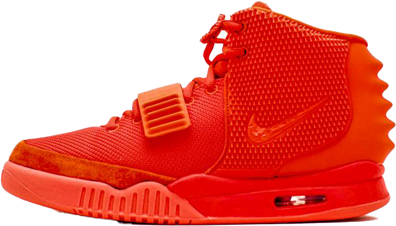

AIR YEEZY 2
WHILE THERE WERE ONLY 2 AIR YEEZY SHOES, THE SILHOUETTE IS STILL NOT ONE TO BE FORGOTTEN. THE AIR YEEZY 2 WAS THE SECOND OF THE TWO SHOES DESIGNED BY KANYE WEST FOR NIKE BEFORE HE LEFT FOR ADIDAS AND LATER WENT ON HIS OWN WITH HIS BRAND “YEEZY.” THIS MAKES THEM EXTREMELY EXCLUSIVE, ESPECIALLY THE RED OCTOBER COLORWAY, WHICH WAS A VERY LIMITED RELEASE. IT HAS THE SECOND HIGHEST PRICE TAG IN THIS COLLECTION. THE SHOE FEATURES A STRAP AND HAS INSPIRATION FROM OTHER NIKE TECH PIECES.
INITIAL RELEASE: 2012
RELEASES: 3
COLORWAY: RED OCTOBER
CURRENT RESALE PRICE: $15,000 (STOCK-X)